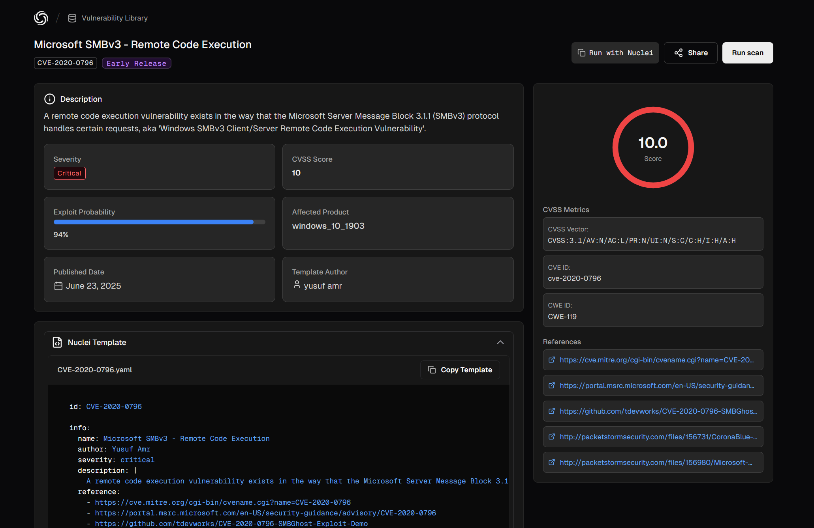
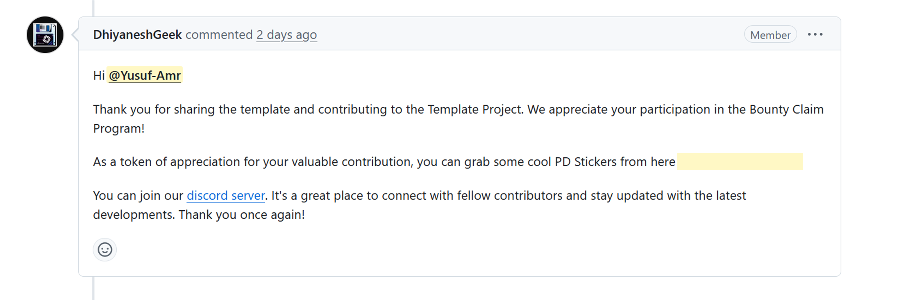

🚀 Happy to see it listed on the official ProjectDiscovery website as the current detection for this vulnerability!🔗 You can check it out here: - Official ProjectDiscovery Listing: https://cloud.projectdiscovery.io/library/CVE-2020-0796
  Why is this important? - Rapid Detection: Organizations can quickly test their infrastructure for CVE-2020-0796 exposure. - Community-Driven Security: Contributions like these strengthen the open-source security ecosystem. - Proactive Defense: Early and reliable detection reduces exploitation risk in production systems. Technical Overview The detection leverages Nuclei’s flexibility to craft precise network probes. It identifies vulnerable SMBv3 endpoints by sending crafted requests and analyzing responses. Example snippet from the detection:
id: CVE-2020-0796
info:
name: SMBv3 RCE Vulnerability (SMBGhost)
author: Yusuf Amr
severity: critical
description: Detects Microsoft SMBv3 Remote Code Execution vulnerability
requests:
- type: network
...